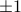
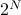
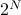

Solving the 1D Ising Model
Today (Wed Week 2) we went through the solution to the 1D Ising model in detail.
Outline of this lecture
Big picture
What are we trying to do?
Our end goal is to find various thermodynamic properties of the 1D Ising model. Remember that thermodynamics means that
the system is in thermal equilibrum; where the probability of each configuration/microstate is
 . (This also called the ‘‘canonical ensemble’’)
. (This also called the ‘‘canonical ensemble’’)we take the
 limit – the system is big,
limit – the system is big,
and we're trying to find various properties of these thermodynamic systems.
What sorts of properties?
we're interested in expectation values such as
 which tell you the average value of the
which tell you the average value of the  'th spin when the system reaches thermodynamic equilibrium.
'th spin when the system reaches thermodynamic equilibrium.For instance, you can imagine that if there's a very strong magnetic field that wants to align the spins to face downwards, then
will be close to -1. Or that if you heat everything up to very hot, then all the spins are scrambled to be randomly up or down, so will be close to 0.For the 1D Ising model,
is the same for all values of . Since the Hamiltonian is translationally invariant (see explanation of symmetry), all the sites are identical, and the average spin will be the same no matter which site you look at.(Maybe for more complicated or realistic models, the sites would be distinct – as in a heterogenous material – and then perhaps
 in general)
in general)
we're also interested in correlation functions such as
 , which tell you how much spin
, which tell you how much spin  and spin
tend to point in the same direction or in opposite directions at equilibrium.
and spin
tend to point in the same direction or in opposite directions at equilibrium.For instance, you can imagine that nearby spins are more correlated than faraway spins, because they can interact with eachother more strongly. Or you can imagine that as
 , any pairs of spins will become less correlated, since the thermal excitations make all the spins jiggle around more.
, any pairs of spins will become less correlated, since the thermal excitations make all the spins jiggle around more.Again, because of translational invariance (see here for explanation), we expect
to only depend on the distance between the spins  . For instance, the correlation between spins 2 and 5 is the same as between 100 and 103, since in both cases, the pairs of sites are separated by three lattice spacings.
. For instance, the correlation between spins 2 and 5 is the same as between 100 and 103, since in both cases, the pairs of sites are separated by three lattice spacings.
How do we calculate properties?
Prof. Kivelson outlined the procedure for us on Monday.
Our system is defined by a Hamiltonian
 , a function that tells us its energy.
, a function that tells us its energy.From the Hamiltonian, we figure out the energy eigenstates, a.k.a. configurations, a.k.a. microstates (or sometimes even ‘‘states’’) of the system. These are the basic states, and we will be summing over these states pretty soon.
Yes, these concepts are the same thing! They're just called different words because we learn them in different contexts…
Our main goal is to calculate the partition function
 .
.
Here the sum runs over all the states of the system  , means ‘‘the energy of the system when it's in state s’’, and
, means ‘‘the energy of the system when it's in state s’’, and  is the inverse temperature of our system.
is the inverse temperature of our system.
We spend most of our effort trying to figure out how to compute the partition function, which begs the question…
Why is the partition function useful?
Once we've found the partition function , we can calculate pretty much everything else. For instance:
the free energy
 is given by
is given by 
the thermal average spin
is given by

To explain the notation: I'm summing over all states (this time I call the states rather than ). Inside the sum I am multiplying the spin of the 'th site (which is ) by the Boltzmann weight  . The number
. The number  is the energy of the system when it's in the state , and we find this by plugging in each of the spins
is the energy of the system when it's in the state , and we find this by plugging in each of the spins  into the Hamiltonian.
into the Hamiltonian.
the spin-spin correlation
, which tells you whether spins and tend to align at equilibrium, is given by
Hopefully, this serves as a sort of useful roadmap for where we're going.
Solving the 1D Ising Model
Rewrite the Hamiltonian as a sum over bonds (rather than sites AND bonds)
Zoom in on a particular bond and write down a transfer matrix which represents the bond from site
to site  .
.Key step – Notice that summing over
 looks an awful lot like contracting over a shared index, a.k.a. matrix multiplication.
looks an awful lot like contracting over a shared index, a.k.a. matrix multiplication.Rewrite
as the trace of a bunch of transfer matrices multiplied together.Similarly, rewrite the average spin
and the correlation function in terms of transfer matrices.
These quantities are best calculated in the eigenbasis of the transfer matrix. So our next steps are to
Express the partition function
in terms of eigenvalues and eigenstates of  . (dificulty: easy)
. (dificulty: easy)Express the average spin
in terms of eigenvalues and eigenstates of . (difficulty: medium)Express the correlation function
in terms of eigenvalues and eigenstates of . (difficulty: Kivelson)
Afterwards, we will diagonalize the transfer matrix and explicitly calculate these quantities. Throughout these steps, we'll appeal to Pauli matrices and our intuition about the quantum mechanics of spin-half to help us calculate things.
Find the eigenvalues and eigenvectors of the transfer matrix
Plug them in to find explicit expressions for
, , and .Profit!?
Writing the Hamiltonian as a sum over bonds
Our first step is to rewrite the Hamiltonian as a single sum over bonds, rather than two separate sums. Later on, we'll see that this form helps us neatly separate the partition function in a nice way.
The Hamiltonian was defined as
where the first term is the energy of each of the bonds between neighboring sites, and the second is the energy of each of the sites. Since we want to rewrite the Hamiltonian as a sum over bonds, we re-assign the energy of 'th site to its two neighboring bonds (bond to , and to ). (We also introduce a factor one-half to compensate for the fact that each site will now be counted twice). Now the Hamiltonian is sum over bonds
where is the energy of the bond between sites and . (Note that takes on four possible values, since there's four combinations of what the spins on sites and : ++, +-, -+, and --.)
Defining the transfer matrix
With the Hamiltonian written in this form, we can calculate the partition function more easily.
Remember that the partition function is the sum over all states of the Boltzmann weight  . Since the Hamiltonian can be written as a sum, the Boltzmann weight can be written as a product
. Since the Hamiltonian can be written as a sum, the Boltzmann weight can be written as a product
At this point we introduce the transfer matrix as a notational trick to make the expression much look nicer. If we rename each of the factors in the product by defining
then looks like
ie, there's just a factor of for each of the bonds in the Hamiltonian.
As another notational trick (remember this whole business with transfer matrices is sort of a notational trick anyways!), we can also rewrite the matrix entries of in a quantum-mechanics-esque manner as . In this picture, we interpret the transfer matrix as an operator in the Hilbert space spanned by and  . Since we're well versed with manipulating bras and kets from quantum mechanics, this alternative notation might be helpful for building our intution.
. Since we're well versed with manipulating bras and kets from quantum mechanics, this alternative notation might be helpful for building our intution.
Using this bra-ket notation, our expression for now looks like
This notation can be more enlightening, or more confusing, depending on your tastes! Personally, I like this bra-ket notation because my eyes are pretty bad and I find it annoying to squint at subscripts.
Interpreting the transfer matrix
The transfer matrix answers the question, if there's a bond between a spin  and another spin , then what is the value of for that bond? Since there's two possibilities for the first spin (+1 or -1) and two possibilities for the second spin (+1 or -1), that means that is a 2x2 matrix with four entries. (It's a funny sort of matrix where the indices take on values of .)
and another spin , then what is the value of for that bond? Since there's two possibilities for the first spin (+1 or -1) and two possibilities for the second spin (+1 or -1), that means that is a 2x2 matrix with four entries. (It's a funny sort of matrix where the indices take on values of .)
To be explicit, we can write the components of as
Rewriting the partition function as a trace
Now that we have a nice expression for , we turn back to our task of finding the partition function , which means we need to sum over all the possible configurations of the system. How do we do this?
We need to sum over all possible configurations of the  spins; each spin can either be up or down, so there's a total of  configurations. Symbolically, we write this sum as
spins; each spin can either be up or down, so there's a total of  configurations. Symbolically, we write this sum as
that is, the first spin takes on values , the second spin takes on values , etc., and we're performing this sum for each of the spins. In class, Prof. Kivelson wrote a confusing expression with a product sign; personally, I'm not a fan. I think that expicitly writing out each of the summations is much more understandable.
Anyways, to find the partition function, we need to calculate
When we expand out the sum, we realize the key trick: the transfer matrices are matrix-multiplied with each other, because you sum over the repeated index.
Rememeber that matrix multiplication is defined as . If we zoom in on the multiplication between the 1-2 transfer matrix and the 2-3 transfer matrix, we see that indeed, the transfer matrices are being multiplied by each other when we sum over their shared index  :
:
So when we sum over spin #2, those two transfer matrices ‘‘collapse’’ together and we're left with a squared transfer matrix between spin #1 and spin #3.
If we repeat this process of ‘‘collapsing’’ all the transfer matrices together, we end up with
which we recognize as the formula for the trace of ,
It's also possible to do this manipulation in the bra-ket notation. (Personally, I find this notation a bit more enlightening.) Remember that a matrix element in bra-ket notation is written as  . If we use this notation, the partition function looks like
. If we use this notation, the partition function looks like
If we suggestively scooch the sum signs next to their respective ket-bras, it looks like
and we realize that there's just a copy of the identity lying between neighboring transfer matrix operators. (Remember the resolution of the identity  .)
.)
So simplifies to
![Z = sum_{sigma_1} langle sigma_1 | t^N | sigma_1 rangle = textrm{Tr} left[t^Nright]](eqs/7694865124103242872-130.png)
as advertised.
Also, I can't help but to notice how familiar the expression for looks! It's reminiscent of the propogator in the path integral formulation of quantum mechanics, where we split up the time evolution operator into chunks, and then sandwich a resolution of the identity between each of the chunks ;)
Rewriting average spin as a trace
Now that we know how the partition function looks like, let's go on to compute the ensemble average of the spin, . I'll be using the bra-ket notation since I find it hard to squint at all the puny subscripts.
As with all expectation values, we can calculate the expectation of by summing up the value of for each microstate, weighted by its probability. This has the form
and if we plug in the Boltzmann weights for the probabilities , our expression looks like
The sum looks quite similar to our expression for earlier, with the exception of an extra factor of . To see the effect of what that factor does, let's zoom in on everything that involves inside the expression:
How do we make sense of this expression? If there wasn't the factor of , this would just be the resolution of the identity, , but it's not immediately obvious what the factor of does. Let me try explicitly writing out the sum:
This is a matrix with +1 in the (+1,+1) entry and a -1 in the (-1,-1) entry. In other words, it's the Pauli z matrix defined by
Now when we write out the transfer matrices in our sum, all the ket-bras resolve to the identity expect for the 'th one, which instead becomes a Pauli z matrix. So we end up with a trapped between a bunch of 's in our expression.
Rewriting the spin-spin correlation as a trace
When we find the spin-spin correlation function , a very similar trick happens; you can work out the details for yourself.
The end result is that
Calculating these traces
We still need to calculate these traces in terms of some basis. Remember from linear algebra that we can calculate traces in terms of any basis we want.
In our case, the best basis to use is the eigenbasis of the transfer matrix . Since the transfer matrix is a real symmetric 2x2 matrix, it has two orthogonal eigenvectors that span its whole Hilbert space. We'll write these two eigenvectors and their corresponding eigenvalues as

We won't actually explicitly find these eigenvalues and eigenvectors just yet; I'll leave that for the next section because there's some neat tricks you can do with Pauli matrices by drawing an analogy to a spin-half particle. For now I want to pretend we know the eigenstates already, and just focus on the algebraic manipulations.
(Throughout this section I'll slip into quantum mechanics lingo, and say ‘‘operator’’ in place of ‘‘matrix’’ or ‘‘state’’ in place of ‘‘vector’’)
Simplifying the partition function
What's so nice about the eigenstates of is that they make it much easier to find . When you apply an operator multiple times to an eigenstate, you just pull out an eigenvalue each time:
(Remember that is an operator, but are just numbers.)
So if we use this basis to evaluate the partition function, it simplifies very nicely:
Since eventually we'll be taking the thermodynamic limit , it's nice to rewrite this expression a bit to understand what happens when we take that limit. We find that
In the expression above, is less than 1, so when we raise it to a huge power like , it goes to 0.
Simplifying the average spin
We can do something quite similar for finding the average spin
which can be written explicitly in the eigenbasis of as
I'll describe in words what happens when we sandwich our eigenstates around the operator. The copies of to the left of the can act backwards on the bra-eigenstate to pull out powers of the eigenvalue (no complex conjugate since is Hermitian with real eigenvalues!); the other copies of to the right of act forwards on the ket-eigenstate to pull out another powers of the eigenvalue. We're left with the trapped inside the sandwich:
Again, when we take , only the first term survives, because the ratio of the terms goes to 0. So we find that
Diagonalizing the Transfer Matrix
Check out my answer on piazza, where I explain how to find the eigenvalues of by decomposing it in terms of the Pauli matrices as .
Check out the picture here for a graphical explanation of why  . A picture is worth a thousand words!
. A picture is worth a thousand words!
Work in progress, check back soon…

Our first problem set
To be honest, we pretty much did the problem set during class today.
On the problem set, Prof. Kivelson first asks us to calculate the magnetization density  , which we did in class (!). Later he asks us to express the transfer matrix in terms of Pauli matrices (which we also did in class (!?)) and to discuss the correspondence between the 1D Ising Model and a spin-half quantum system (again, we also did this in class!!!).
, which we did in class (!). Later he asks us to express the transfer matrix in terms of Pauli matrices (which we also did in class (!?)) and to discuss the correspondence between the 1D Ising Model and a spin-half quantum system (again, we also did this in class!!!).
It looks like the main purpose of the problem set is
to review everything from class today,
to gain a better intuition by interpreting the various limits of the magnetization density
, andto apply our techniques from class to solve other systems like the
 antiferromagnet (with both first and second neighbor interactions) or the X-Y ferromagnet (where each spin takes on an angle
antiferromagnet (with both first and second neighbor interactions) or the X-Y ferromagnet (where each spin takes on an angle  rather than a discrete ).
rather than a discrete ).
Anyways, I'm not sure how much I can discuss here without violating the honor code. But I did have an interesting remark on the definition of magnetization density.
tl;dr:  is a subtle statement.
is a subtle statement.
On the problem set, the magnetization density is defined as

which seems sort of bizarre since we add up terms and then divide by again. What's going on here?
The answer has to do with intensive vs extensive quantities, and experimental observables vs mathematical expressions.
To start off, notice that the average of any particular microscopic spin is impossible to measure! (Spin would have a puny magnetic field, and besides, there's a whole bunch of other spins nearby that would mess up the measurement.) Our actual experimental observable is not the magnetization of one particular spin, but rather the magnetization of the whole magnet, which is given by
That is, when we perform an experiment, we measure the total magnetization of the magnet, which we get by adding up the contributions from each of the spins. (Notice this is capital  , not lowercase !)
, not lowercase !)
The problem with total magnetization is that it's an extensive rather than intensive property – that is, it scales with the system size . If we doubled the size of the magnet, we would also double the total magnetiation . Now, we don't want to use an extensive property that grows with , since it'll blow up when we take the thermodynamic limit . Rather, we want to use an intensive property independent of system size, a density rather than a total quantity.
To solve this conundrum, just divide the total magnetization by . We define the magnetization density as

and voila, no longer blows up as . So we've achieved our goal of finding an experimental quantity that's intensive.
Finally, just to make this whole affair even more ridiculous, it turns out that is actually the same value for all ! (Remember, the Ising model Hamiltonian is translationally invariant.) So when we find , we're just adding up the same number times, and then dividing by …and at the end of the day, the magnetization density is just the same as the average spin .